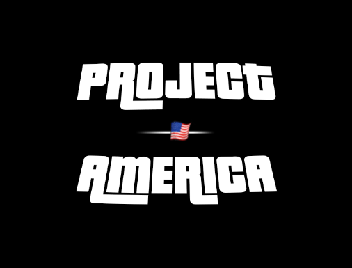
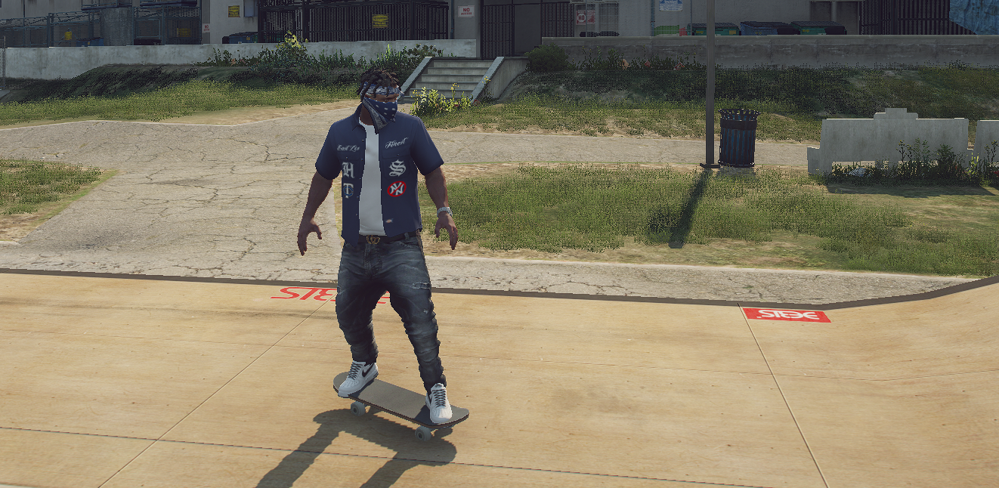
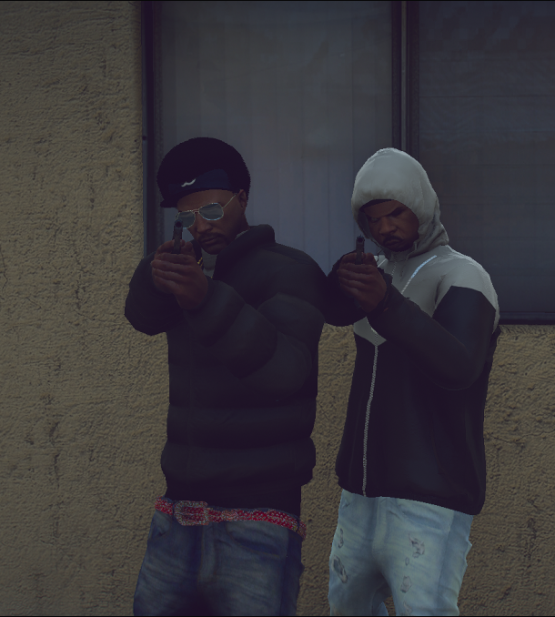

"Más que una familia."
¿QUÉ ES PROJECT AMERICA?
Project America es una comunidad hispano dedicada al roleplay IRL, en el que podrás tener tu propio personaje y hacer todo tipo de acciones con este.
¿CÓMO PUEDO UNIRME A LA COMUNIDAD?

Para poder acceder al servidor debes unirte a nosotros a través de nuestro
discord
seguidamente realizar la
whitelist
escrita y aprobarla con éxito.
¿CÓMO PUEDO CONTACTAR CON VOSOTROS SI TENGO ALGUNA DUDA?

Puedes contactar con nosotros a través de nuestro
discord
, puedes abrir un ticket en él, o puedes contactar con alguno de los staff y preguntarle tus dudas para que te las pueda resolver.